003
共鸣印记
The past and present intertwine: under pressure, the mind tunes into old psychological broadcasts — childhood imprints that cage the adult body. Drawing on the double-slit experiment and Whitfield's Healing the Inner Child, contours of inner and outer cages become garment plates. Inflatable tension, gelatin "bruises," and soft volumes externalize marks hidden beneath the surface.
过去与现在相互缠绕：在压力下，心智会调到旧有的心理广播——囚禁成年身体的童年印记。借双重缝实验与惠特菲尔德《疗愈内在小孩》的启发，内外牢笼的轮廓成为版片。充气张力、明胶「淤青」与柔软体量，外化潜藏于表面之下的印记。
Look
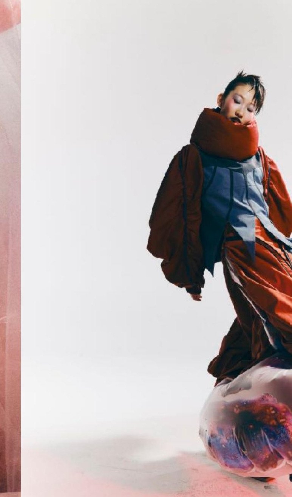
Look · Inflated volumes & red gown
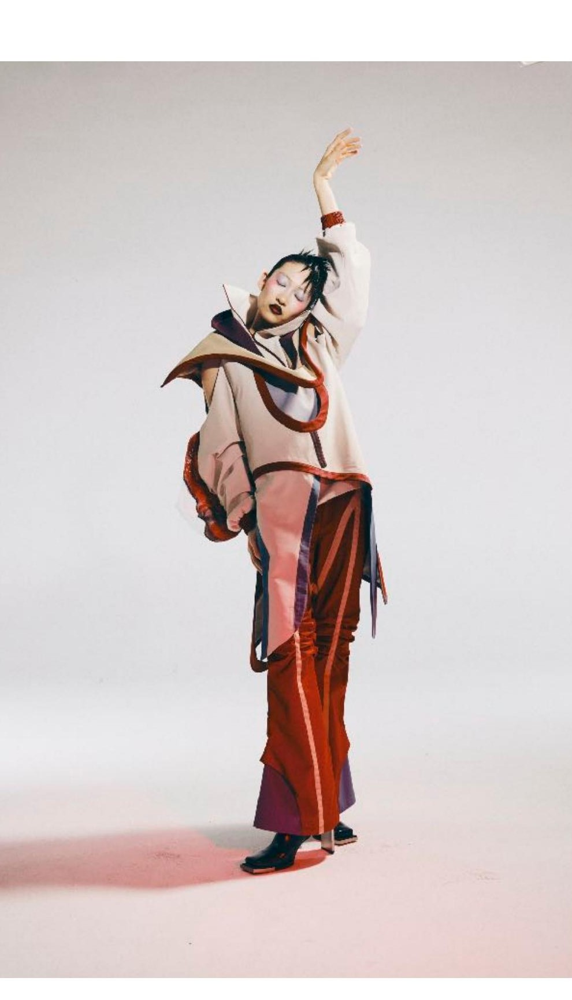
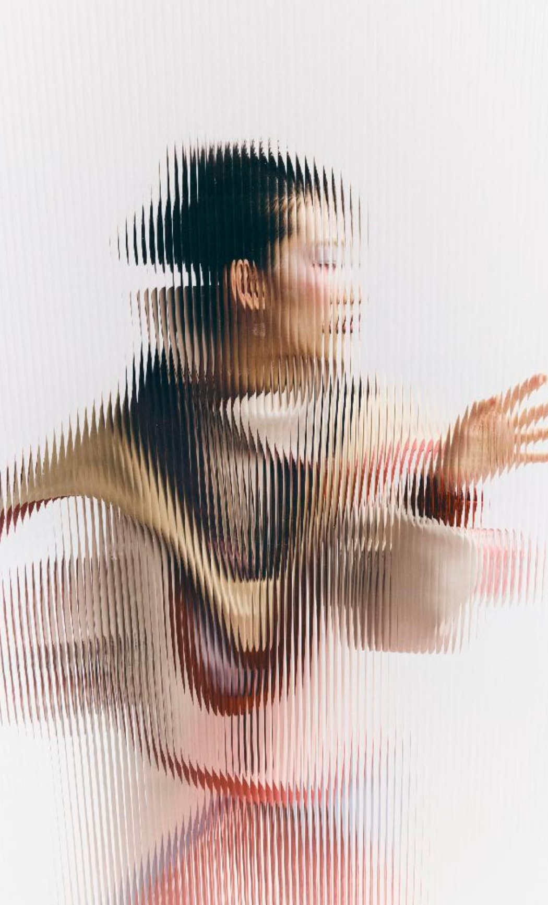
Look · Standing silhouette · Ribbed-glass portrait
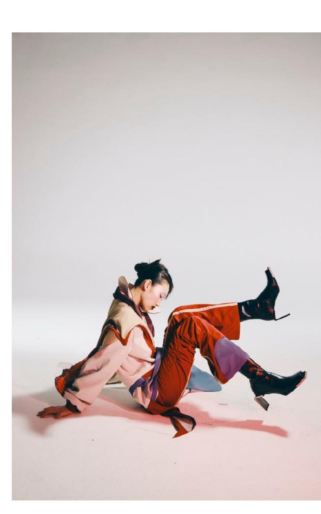
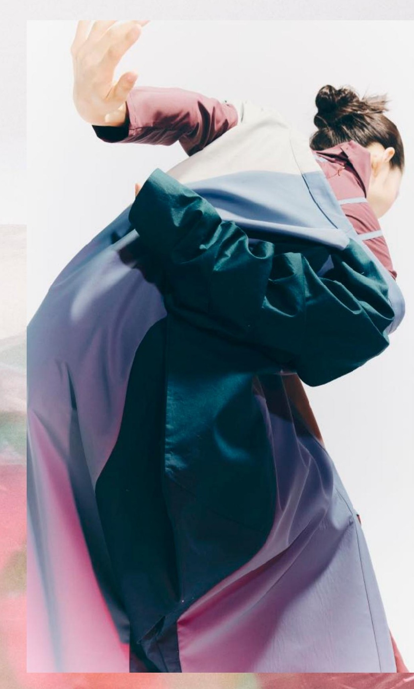
Look · Floor action · Purple drape close-up
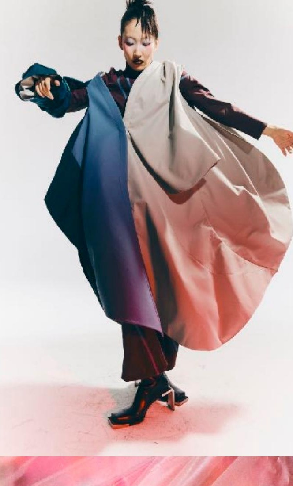
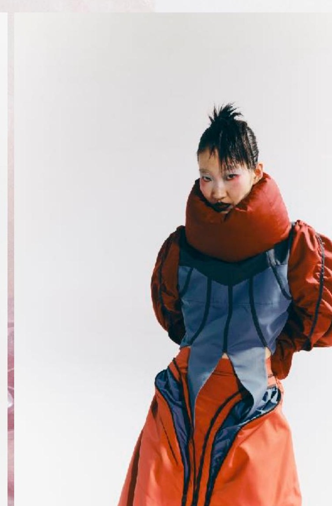
Look · Volume skirt · Red gown stand
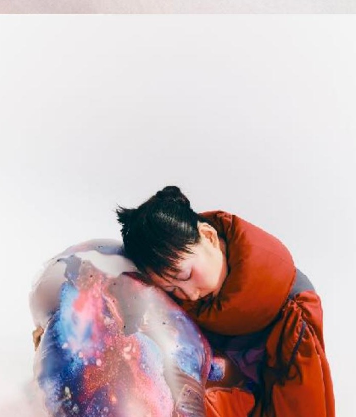
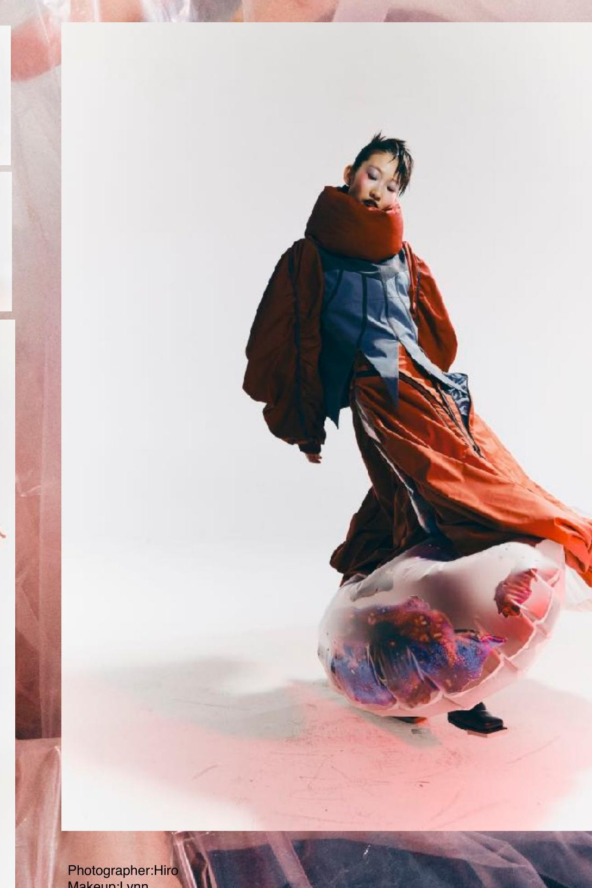
Look · Orb crouch · Title still
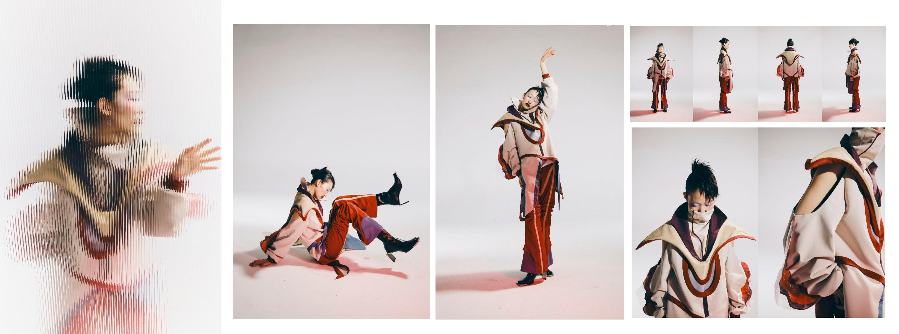
Lookbook · Cream / burgundy board (HD)
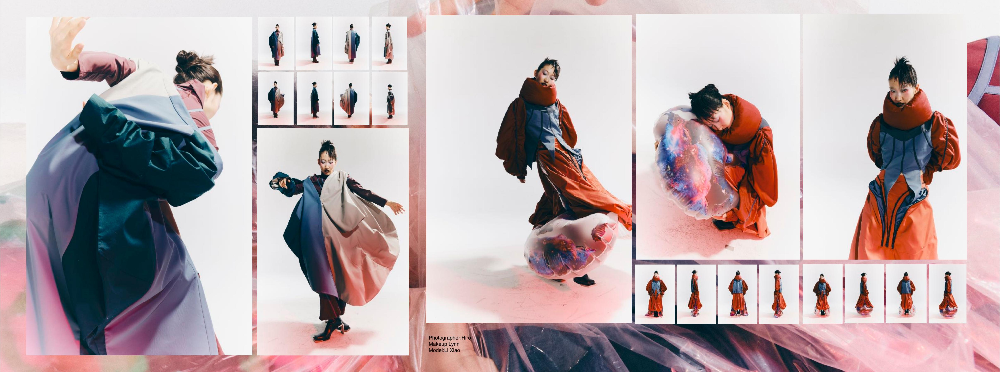
Lookbook · Pink plastic ground board (HD)
Process
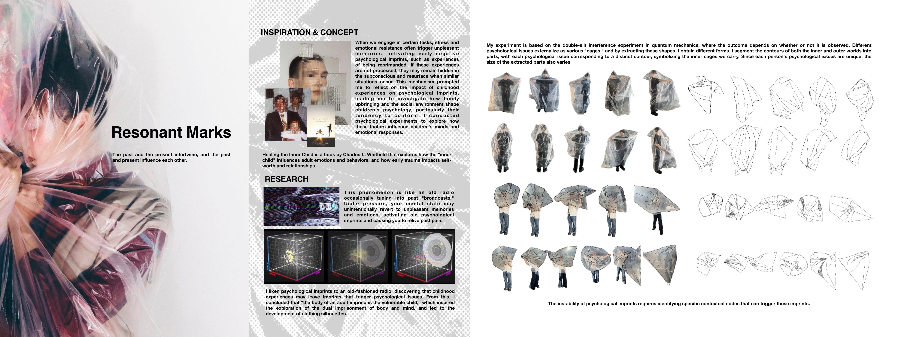
Process · Childhood imprint & cage contours
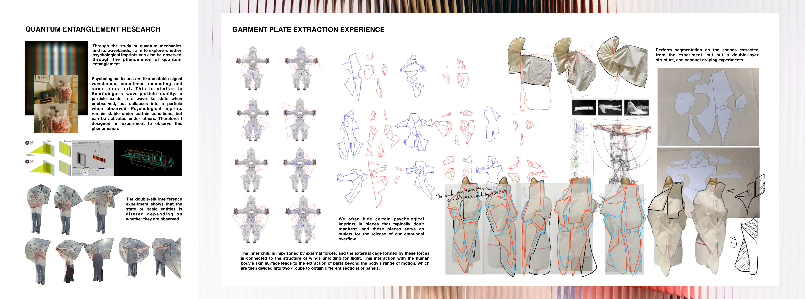
Process · Quantum entanglement & plate extraction
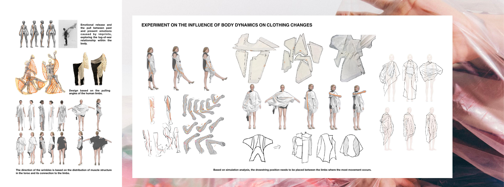
Process · Body dynamics on garment form
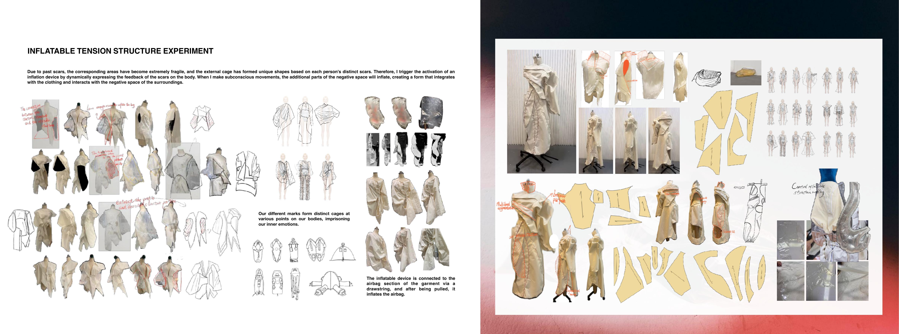
Process · Inflatable tension & toile
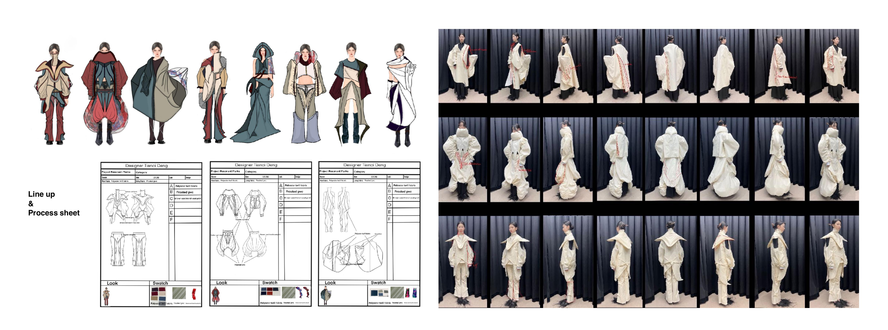
Process · Line-up & process sheet
Detail
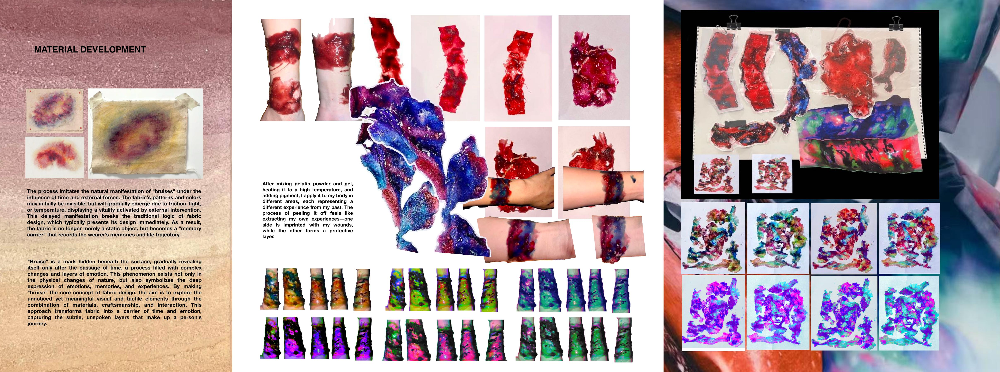
Detail · Gelatin “bruise” material
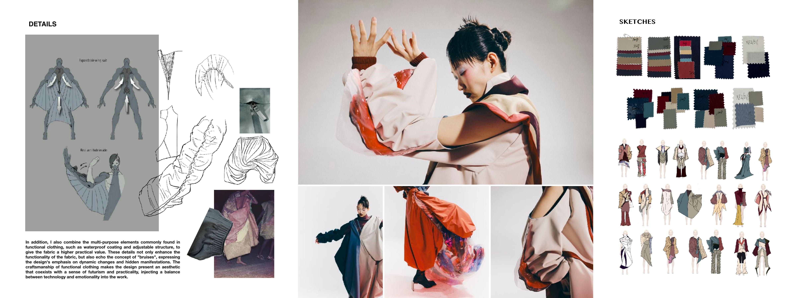
Detail · Sketch & material close-up
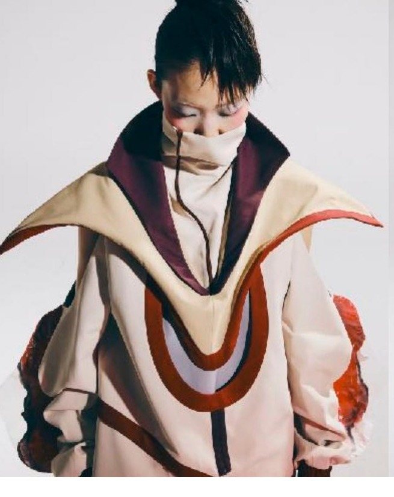
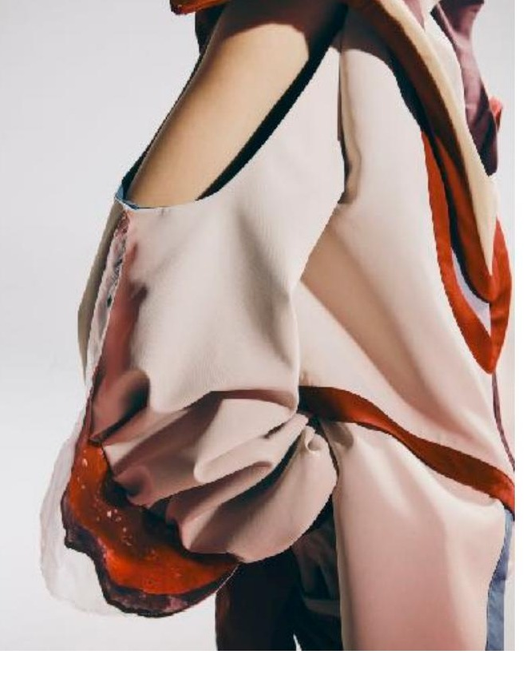
Detail · Collar & shoulder construction